JOHANN JOSEPH FUX · GRADUS AD PARNASSUM
악보를 눈으로,
대위법을 귀로.
두 선율이 만나 하나의 음악이 되는 과정.
각 성부를 따로 듣고, 함께 흐르는 소리를 비교해 보세요.
악보 4
모든 선율의 출발점
정선율 · Cantus firmus

먼저 바탕이 되는 선율을 들어보세요. 다음 악보에서도 같은 선율이 이어집니다.
악보 5
하나의 선율 위에, 또 하나
제1종 대위법 · 음표 대 음표

아래 성부의 정선율과 위 성부의 대위 선율을 따로 들어본 뒤, 함께 들어보세요.
악보 6
두 음을 바꾸면
요제프의 진행과 알로이시우스의 교정

빨간 ×는 잘못된 음을 가리킵니다. 아래 성부의 첫 두 음이 솔–레에서 낮은 레–레로 바뀝니다. 악보에 나란히 적힌 두 대안은 각각 따로 연주합니다.
악보 7
음 사이에 숨어 있는 진행
긴 음을 짧은 음으로 나누어 보기
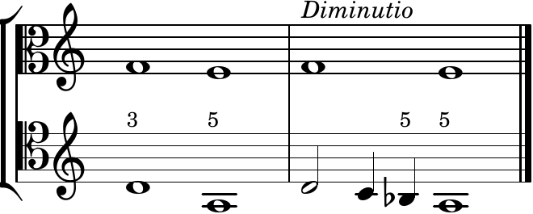
왼쪽 진행과 오른쪽의 분할된 진행을 차례로 들어보세요. 오른쪽에서는 아래 성부의 시♭–라와 위 성부의 파–미 사이에 5도에서 5도로 가는 진행이 드러납니다.
악보 8
선율을 풀어서 들으면
두 가지 진행과 각각의 분할 예
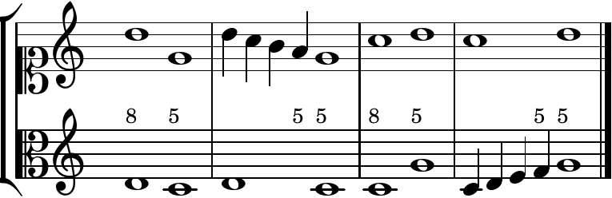
첫 진행과 그 분할 예, 이어서 둘째 진행과 그 분할 예를 차례로 연주합니다. 숫자 5가 붙은 지점에서 두 성부의 움직임을 비교해 보세요.
악보 9
시와 파 사이
감5도 · Diminished fifth
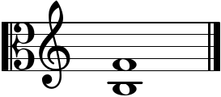
시와 파는 음이름으로 다섯 칸 떨어져 있지만, 반음 여섯 개의 간격입니다. 두 음을 함께 듣고 다음 악보의 완전5도와 비교해 보세요.
악보 10
반음 하나를 바꾸면
완전5도 · Perfect fifth
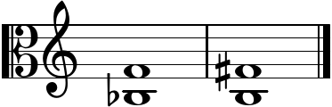
아래의 시를 반음 내리거나 위의 파를 반음 올리면, 간격이 반음 일곱 개인 완전5도가 됩니다. 왼쪽과 오른쪽 예를 차례로 듣거나 하나씩 골라 들어보세요.
악보 11
미에서 시작하는 두 선율
아래 성부의 정선율
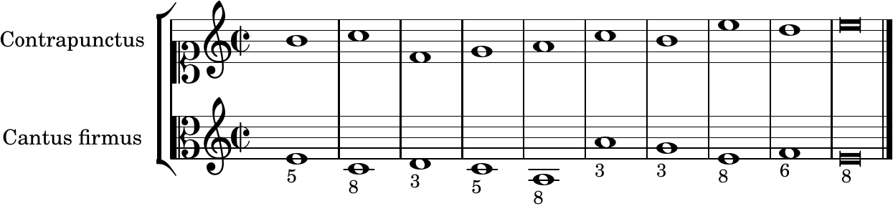
미를 중심으로 한 정선율에 위 성부를 붙인 작례입니다. 두 성부를 따로 듣고 함께 비교해 보세요.
악보 12
노래하기 어려운 도약
증4도 도약과 교정
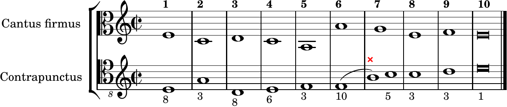
아래 성부의 여섯째 음 파에서 일곱째 음 시로 뛰는 진행과, 시를 도로 바꾼 진행을 비교합니다. 악보의 오류 음과 교정 음은 동시에 연주하지 않습니다.
악보 13
파를 중심으로
위 성부에 붙이는 대위 선율

아래 성부의 정선율과 위 성부의 움직임을 비교해 보세요.
악보 14
두 성부가 자리를 바꾸면
성부 교차
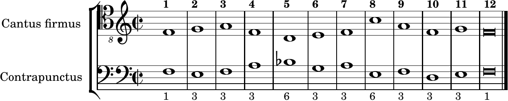
넷째부터 일곱째 마디에서는 아래 오선에 적힌 대위 선율이 정선율보다 높아집니다. 성부 선택의 위·아래는 오선 위치를 뜻합니다.
악보 15
두 군데를 고쳐 듣기
큰 도약과 옥타브로 향하는 진행

위 성부 열째·열한째 음의 미–레를 도–라로 바꾼 교정안을 비교합니다. 빨간 ×가 있는 원래 음과 옆의 교정 음은 각각 별도로 연주합니다.
악보 16
반대 방향으로 벌어지는 두 성부
5도에서 옥타브로
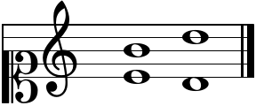
위 성부는 시에서 레로 올라가고, 아래 성부는 미에서 레로 내려갑니다.
악보 17
반대 방향으로 모이는 두 성부
10도에서 옥타브로
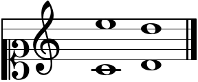
위 성부는 미에서 레로 내려가고, 아래 성부는 도에서 레로 올라갑니다. 악보 16과 움직임의 방향을 비교해 보세요.
악보 18
같은 음으로 모이면
3도에서 같은 높이의 레로
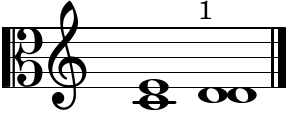
미와 도가 각각 움직여 같은 높이의 레에 도착합니다. 끝의 두 음표는 두 성부를 나타내며 동시에 울립니다.
악보 19
도약해서 옥타브로
bad로 표시한 두 진행
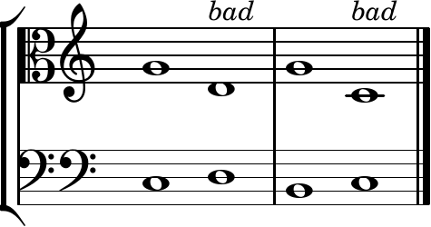
두 짧은 진행을 왼쪽부터 차례로 연주합니다. bad는 푹스가 이 문맥에서 피해야 한다고 설명하는 진행을 나타냅니다.
악보 20
도약해서 같은 음으로
bad로 표시한 두 진행
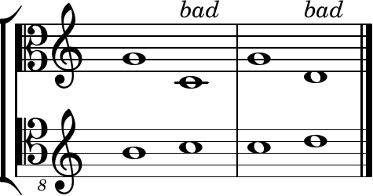
위 성부가 내려가며 아래 성부와 같은 음에 도착하는 두 작례입니다. 왼쪽과 오른쪽을 차례로 들어보세요.
악보 21
솔에서 출발하는 낮은 선율
위 성부의 정선율 · N.B.

두 성부 모두 솔에서 시작합니다. N.B.는 주의해서 보라는 뜻이며, 첫 진행에 관한 본문의 설명을 가리킵니다. 아래 성부의 파♯도 확인하며 들어보세요.
이 듣기 자료에 관하여
요한 요제프 푹스의 《파르나소스로 오르는 계단》 제2권 학습을 위한 악보 4–21을 담은 학습용 시제품입니다. 악보 번호는 알프레드 만 (Alfred Mann) 판본을 따릅니다.
빠르기는 2분음표 = 60입니다. 파이프오르간 계열의 합성 음색을 사용했으며, 1725년 특정 악기의 실제 녹음이나 복원 음원은 아닙니다.
성부를 바꾸면 재생 위치가 처음으로 돌아갑니다. 재생 버튼을 눌러 시작하세요. 한 번에 하나의 연주만 재생됩니다.